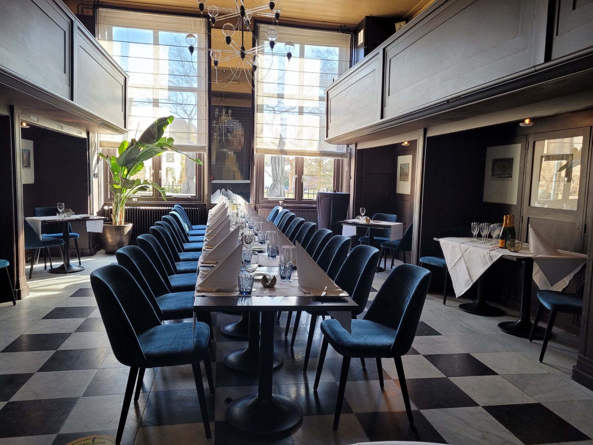
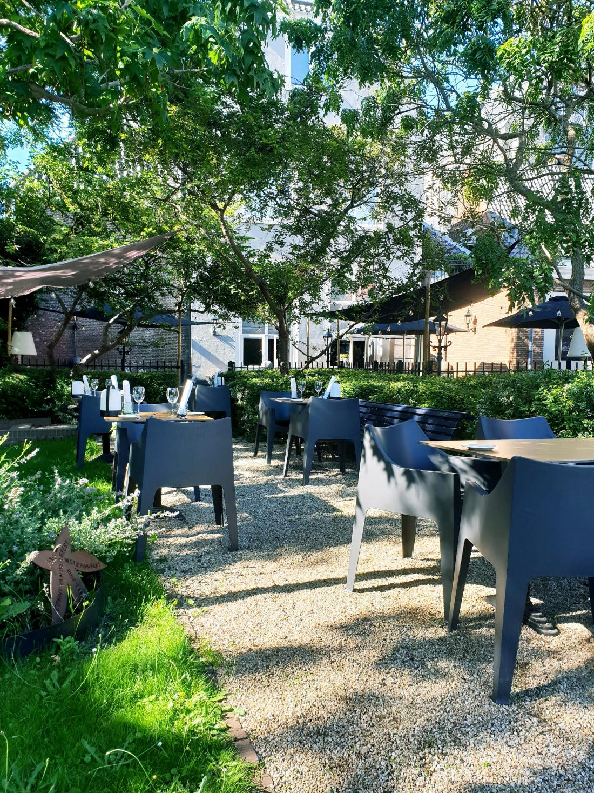
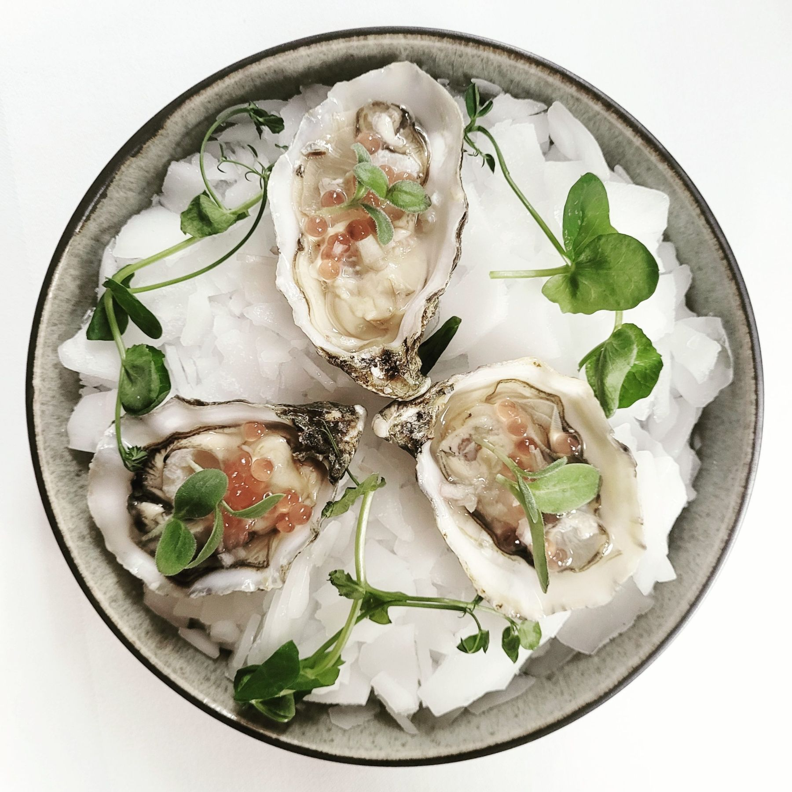
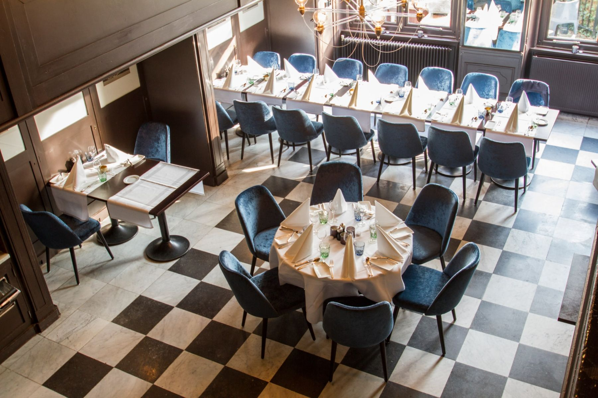
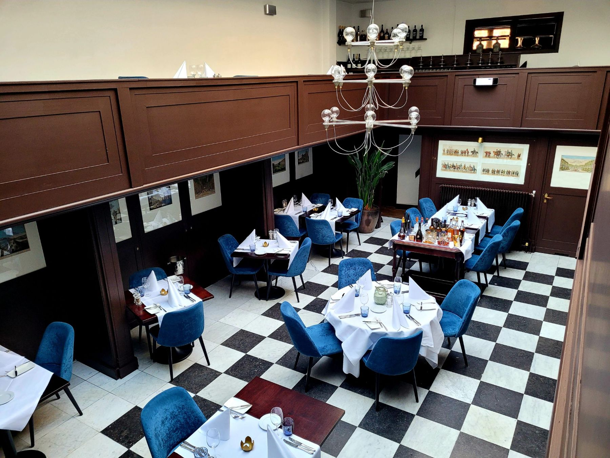
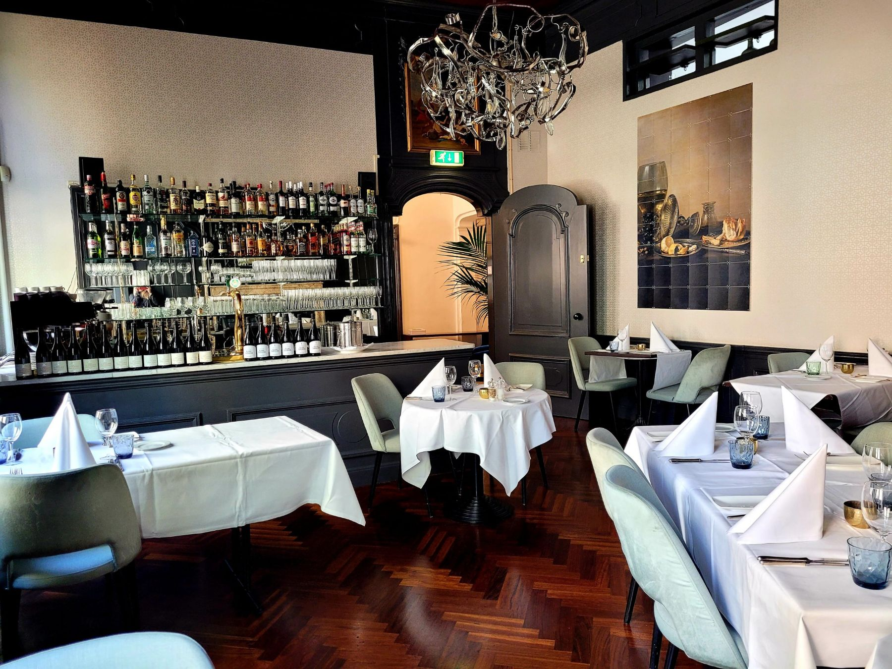
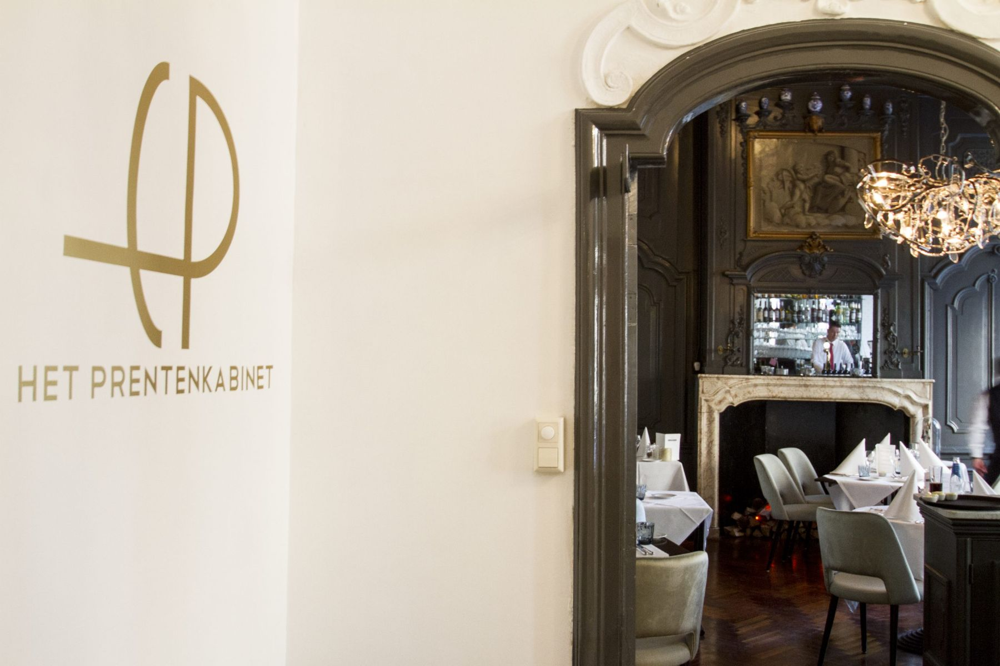
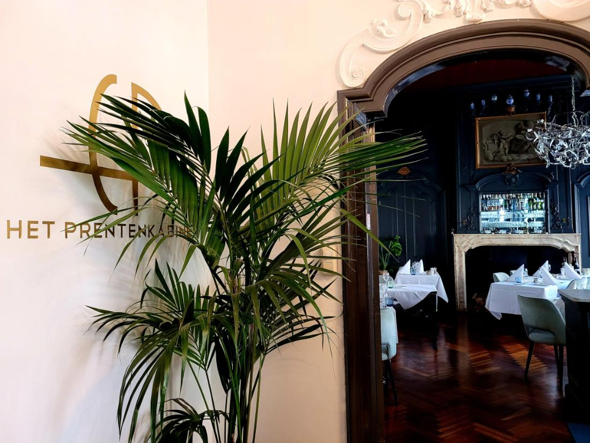

Vanaf 13 oktober 2026
Wildmenu
Maandag t/m zaterdag vanaf 17:30 uur: amuse, 3-gangen surprise en een scroppino tussendoor. Tot maximaal 8 personen, vermeld ‘wildmenu’ bij uw reservering.
€ 54,50 p.p.
Bel 071 - 512 6666
In de oude Pieterswijk van Leiden, in een eeuwenoud pand met een zonnig parkterras. De keuken laat zich inspireren door de Frans/internationale keuken en streekproducten.

Maandag t/m zaterdag vanaf 17:30 uur: amuse, 3-gangen surprise en een scroppino tussendoor. Tot maximaal 8 personen, vermeld ‘wildmenu’ bij uw reservering.
Kerstavond diner, kerstlunch op beide kerstdagen en een 4-gangen kerstmenu om thuis te serveren.
De bijzondere sfeer in het eeuwenoude pand maakt Het Prentenkabinet tot een van de mooiste en meest karakteristieke restaurants van Leiden.
De koks laten zich inspireren door de Frans/internationale keuken en streekproducten. Op verzoek serveren wij ook gluten- en lactosevrij. Het Prentenkabinet is er trots op dat het wederom in de Lekker Gids top 500 is vermeld: een mooie prestatie van het hele team.


Kenmerkend voor Het Prentenkabinet is het ruime aanbod aan culinaire en leuke arrangementen. Het aanbod wisselt van tijd tot tijd. Offerte aanvragen? Neem contact met ons op.
Een middag Leiden en een avond aan tafel.
Kunst, cultuur en… heerlijk uit eten.
Ook als cadeaubon te koop.
Het liefdesdiner met wijnarrangement. Ook als cadeaubon te koop.
Vraag naar de prijs via 071 - 512 6666.
Te bestellen voor de lunch donderdag t/m zaterdag (vanaf 12:30 uur) en het diner maandag t/m zaterdag (vanaf 17:00 uur), tenzij anders vermeld.
Minimaal 10 personen.
Minimaal 10 personen. Lunch do t/m za vanaf 12:30 uur, diner ma t/m do vanaf 17:00 uur.
Minimaal 10 personen.
Dagelijks vanaf 10 personen. Ontvangst met bubbels en amuse, een rondvaart van 50 minuten door de Leidse grachten met scroppino, 3-gangen diner, 2 consumpties (bier, fris of wijn) en koffie of thee met zoete lekkernij. Exclusief boothuur: tussen € 10 en € 26 p.p., afhankelijk van de groepsgrootte.
Voorbeeld van een tijdschema (naar wens aan te passen):
Minimaal 10 personen.
Minimaal 10 personen. Vraag uw offerte aan via info@prentenkabinet.nl.
Minimaal 10 personen.
Dagelijks vanaf 10 personen, van 14:30 tot 16:00 uur.
€ 34,50 p.p. inclusief aperitief, € 29,95 p.p. zonder aperitief.
Buffet, tijden in overleg vanaf 12:00 uur. Minimaal 10 personen.
Vanaf 40 personen, inclusief, voor 1½ uur.
Vanaf 40 personen, inclusief, voor 2 uur.
Vergaderen en teamuitjes, minimaal 10 personen.
Gedurende 3 uur, tijden in overleg. Ontvangst met koffie/thee en een friandise; tijdens de vergadering koffie, thee, water en jus d’orange.
Gedurende 5 uur, tijden in overleg. Ontvangst met koffie/thee en een friandise, tijdens de vergadering koffie, thee, water en jus d’orange, en tijdens de lunch een kopje soep en belegde broodjes.
Gedurende 5 uur, tijden in overleg. Ontvangst met koffie/thee en een friandise, tijdens de vergadering koffie, thee, water en jus d’orange, een 3-gangen lunchmenu en ’s middags koffie/thee met friandises.
Tijden in overleg. Ontvangst met koffie/thee en een friandise, tijdens de vergadering koffie, thee, water en jus d’orange, belegde broodjes bij de lunch, ’s middags koffie/thee met friandises en na de vergadering een aansluitend 3-gangen diner.
Laat het ons tijdig weten, dan reserveren wij de apparatuur voor u.
Voor team- en bedrijfsuitjes in Leiden werken we samen met Aloha Events. Dit evenementenbureau organiseert binnen- en buitenactiviteiten voor groepen van ongeveer 12 tot 100 personen, zoals een spannend Moordspel of het creatieve spel de Alleskunner. Uitstekend te combineren met een lunch, diner of gezellige afsluiting bij ons in het restaurant.
Van een tafel voor twee tot een besloten feest: in het pand aan de Kloksteeg is voor elk gezelschap een passende ruimte.



Het Prentenkabinet heeft in alle zalen een speciaal luchtfiltersysteem dat fijnstof, pollen, bacteriën en andere allergenen verwerkt.
Vraag een offerte aan
Kom dineren in één van de kleinste restaurants van Nederland: onze private dining room voor 4 tot 8 personen. Geschikt voor een romantisch diner of een speciale gelegenheid met vrienden en familie, zonder bekijks van andere gasten. U geniet van een 4-gangen surprise lunch of diner, samengesteld door onze chef Marco Venmans.
Reserveren gaat via de mail: stuur ons de gewenste datum, het aantal personen, uw telefoonnummer en de dieetwensen van uw gezelschap. Wij laten u zo snel mogelijk weten of de reservering definitief is.
Mail voor het KabinetjeVoor de kerstdagen hebben wij een speciaal menu. Reserveren is noodzakelijk, online of telefonisch. Wij houden graag rekening met dieetwensen en allergieën.
donderdag 24 december
vrijdag 25 december
zaterdag 26 december
Wij zijn gesloten van 27 december t/m 3 januari en ontvangen u graag weer vanaf maandag 4 januari.
Culinair genieten thuis, in samenwerking met catering Le Jambon. Cadeaubonnen kunt u ophalen in het restaurant of laten opsturen; dat geeft u aan bij de bestelling.
Een 3-gangen thuismenu, inclusief brood en boter. Allergieën of dieetwensen geeft u door bij de bestelling.
Eigen, originele cadeaubonnen in verschillende prijsklassen.
De geschiedenis van een Leids gebouw: van pastorie van de ridders van de Duitse Orde via kostschool en universiteitsgebouw tot het Rijks Prentenkabinet, waaraan het restaurant zijn naam dankt.

Floris de Vijfde schenkt recht en grond aan de Leidse commanderij van de Duitse Orde, die ten zuiden van de kerk een pastorie bouwt: het begin van Kloksteeg 25. Met een eigen bakkerij, brouwerij, moestuin, boomgaard en wijngaard.
Commandeur Jacob van Woerdt verbouwt het gebouw met onder meer een nieuwe keuken en een zaal.
Cornelis van der Schuure geeft het pand een tweede uitgang, afgesloten met de Verschuurenpoort: de huidige achteruitgang naar de Herensteeg.
Het laatste stukje commandeurshuis wordt verkocht aan Jan d’Avoine, die er een biljartkamer van maakt.
Kostschoolhouder Jan Hendrik Nieuwveen koopt het aangrenzende huis en trekt de voorgevel op van bruinpaarse handvormbaksteen.
De staat koopt het gebouw en vestigt er de Indische school; later wordt het een collegegebouw.
Op 18 juni neemt het Rijks Prentenkabinet zijn intrek in Kloksteeg 25. Kunstenaars als Jan Wolkers, Anton Heyboer en Ed van der Elsken exposeren er.
De tweelingbroers Jan en Henk Versteegen restaureren het pand in zes maanden. Op 21 oktober opent burgemeester Goekoop Het Prentenkabinet als restaurant.
Op 1 maart neemt Martin van der Ham het restaurant over.
“Geweldig lekker gegeten in een zeer fraaie omgeving.”
Zeer goed!
“Heerlijk eten, warme ambiance en goede bediening! Ik kan het iedereen aanraden.”
Heerlijk gegeten
“Nu ook de lunch ervaren en die was uitmuntend!”
Kies voor lunch!
“We hadden het Rembrandt arrangement en ik kan niet anders zeggen dat het heel origineel was en we hebben heerlijk gegeten.”
Jan Kees
Wij zijn regelmatig op zoek naar nieuwe collega’s voor een fijn en hecht team, in een klassiek en professioneel restaurant met een rijke geschiedenis in het hart van Leiden.
Zelfstandig werkend, fulltime of parttime. Sociaal, servicegericht, spontaan en enthousiast, een teamplayer met een goede beheersing van Nederlands of Engels. Een goed gevoel voor humor komt altijd van pas.
Fulltime of parttime. Je bereidt met passie verfijnde gerechten met verse producten, samen met de chef en zijn brigade. Van hen valt veel te leren.
Parttime. Een onmisbare schakel: jij zorgt dat servies, glaswerk en keukengerei snel en netjes klaarstaan, ook op drukke avonden.
| Lunch | Donderdag t/m zaterdag 12:30 tot 15:30 uur (inloop tot 14:30) |
|---|---|
| Diner | Maandag t/m zaterdag 17:00 tot 23:30 uur (ontvangst tot 20:30) |
| Eerder open | Op aanvraag gaan wij eerder open. |
| Jaarwisseling | Gesloten 27 december t/m 3 januari. Vanaf maandag 4 januari bent u weer welkom. |